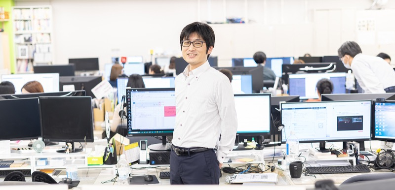

INTERVIEW 05
成長中の会社で、新しい仕組みづくりに挑み続ける
01自分が好きな領域で、自然体で働ける場所を選んだ
前職では情報管理部門を経験した後、総務へ異動になりました。しかし、パソコンやシステムに携われる仕事を続けたいという思いが強く、転職活動を開始。働き方についても、自分の時間をしっかり確保でき、無理なく長く続けられる環境を求めていました。そんな中で目に留まったのが当社です。もともと車やバイクが好きだった私にとって、その領域に関わる商社であることは大きな魅力でした。面接の際にはICT部門の社員同士が気さくに話している様子が伝わり、同年代の社員が多く、フラットな雰囲気を感じました。堅苦しさがなく、自然体で働けそうだと確信したことが入社の決め手です。
02販売管理システムを支える、業務を滞らせない仕事
現在は、新たに導入された販売管理システムの保守・管理を中心に担当。ECサイトの注文データをもとに受注・発注や在庫を処理する仕組みを支えるのが主な役割で、そこで発生する不具合の調査や対応にあたるほか、各部署から寄せられる改善要望を形にしていく業務も担っています。特にオペレーション部門や経理部門とのやり取りが多く、システムに不具合が出ると出荷や月次処理に支障をきたすため、迅速な対応が欠かせません。そうした中で意識しているのが、自分が持っている知識をできるだけ共有し、他の人が少しでも仕事を進めやすくなるよう工夫すること。専門用語だけに頼らず、資料や画面イメージを示しながら説明することで、相手にとって理解しやすい情報提供を心がけています。
03効率化を実現し、感謝の言葉がもらえる瞬間が励みになる
この仕事でやりがいを感じるのは、他部署の業務効率化に協力できる点です。困っていることをヒアリングし、どうすれば作業を楽にできるか一緒に考えていく過程は、私自身が好きな分野でもあります。自分の提案が形になり成果が出ると、感謝の言葉をいただけることもあり、それが大きな励みとなっています。当社は成長中の会社であり、新しいことに挑戦できる環境があるのも魅力です。実際に私自身も、パソコンでの処理を自動化するRPAの導入に手を挙げ、勉強しながら業務に取り入れています。今後については特定の役職を目指すよりも、必要とされる存在であり続けることを大切にしたいです。販売管理システムや業務効率化の取り組みを軸に、会社全体がより働きやすくなるよう貢献していきたいと考えています。
1日のスケジュール
- 出社・販売管理システム保守
- 昼休み
- 販売管理システム保守
- 社内RPA開発
- 退社